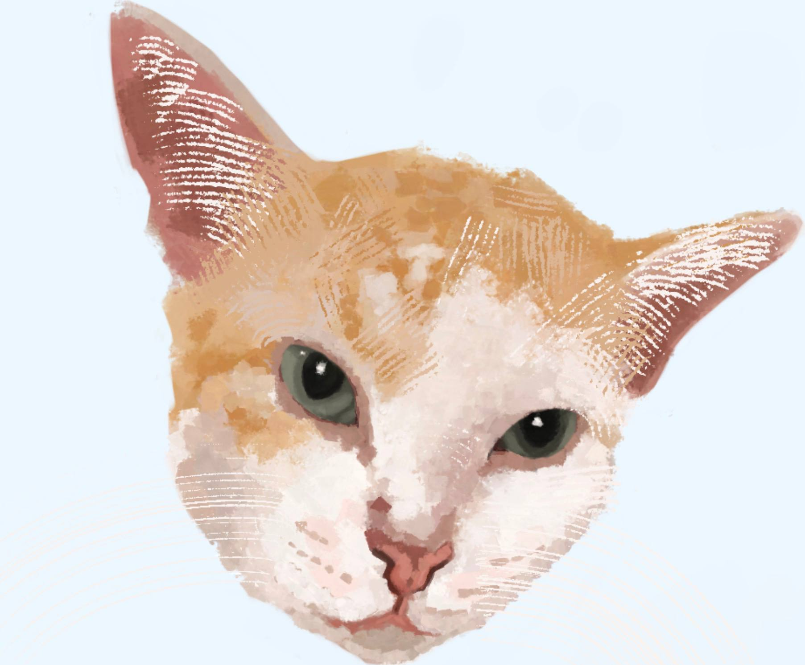

pet a cat!

Pet me
← (hover)
some cool facts
cats spend 70% of their lives sleeping! (or 14-16 hours per day!)
some studies suggest that cat-borne parasite 'Toxoplasma' is linked to increased human attractiveness! 🤯
cats always land on their four legs, everyone knows this!
a cat's purr can heal bones and muscles!
cats claim their owners... when they rub their humans with their scent glands (a message for other cats!)
a cat's whisker is its mood indicator... hanging down = relaxed, straight whiskers = angry (possibly)